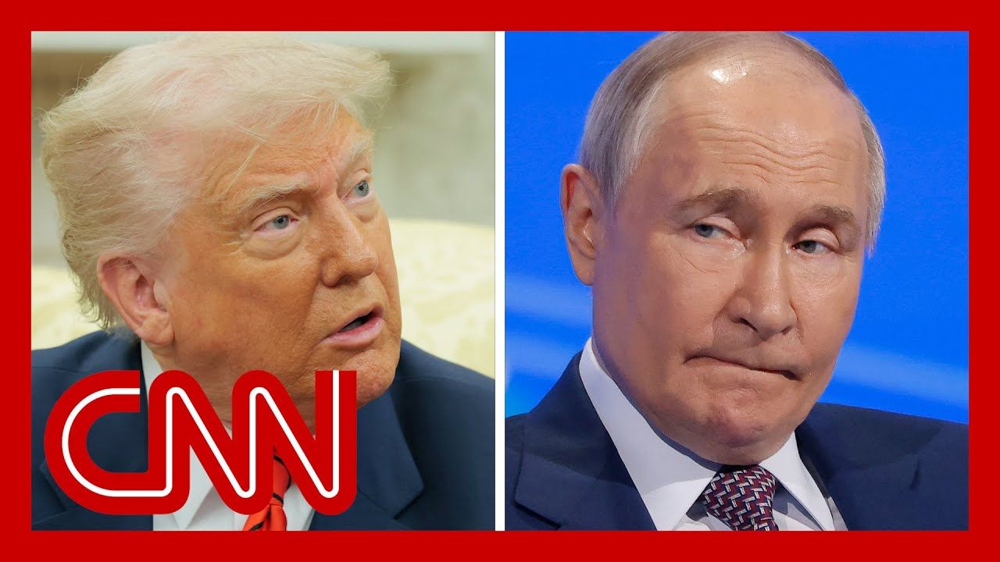

【特朗普称普京将回应乌克兰周末的无人机袭击】
Summary: President Trump discussed Ukraine-Russia tensions and Iran's nuclear program in a call with Putin, who vowed retaliation for Ukrainian attacks. Trump also sought Putin's help in pressuring Iran, though no immediate peace is expected in Ukraine.
摘要： 特朗普总统与普京通话讨论了乌克兰-俄罗斯紧张局势和伊朗核计划，普京誓言报复乌克兰袭击。特朗普还寻求普京协助向伊朗施压，但乌克兰问题短期内无望和平解决。

⏱️ Estimated Reading Time: 16 min
📚 高考3500生词 📚 雅思生词 📚 托福生词 📚 GRE生词
Breaking news.
突发新闻。
President Trump just wrapped up a call with Russian President Vladimir Putin.
特朗普总统刚刚结束了与俄罗斯总统弗拉基米尔·普京的通话。
The US president says they spoke on the phone for approximately one hour and 15 minutes.
美国总统表示，他们的通话持续了约1小时15分钟。
I want to bring back CNN's Kristen Holmes live from the white House.
我将连线CNN驻白宫记者克里斯滕·霍姆斯。
So, Kristen, what did Trump say about this call?
克里斯滕，特朗普对这次通话有何说法？
Yeah. Who he really dives into two separate things.
是的，他主要谈到了两件事。
One, what's going on with Russia and Ukraine and two, the deal with Iran.
一是俄罗斯与乌克兰的局势，二是与伊朗的协议。
So let's start with reading this post, because this is really the white House version of a readout of the call.
让我们先阅读这份声明，因为这实际上是白宫对通话内容的官方解读。
He says he just finished speaking by telephone with, with President Vladimir Putin of Russia.
他表示刚与俄罗斯总统弗拉基米尔·普京通了电话。
The call lasted approximately We discussed the attack on Russia's airplanes by Ukraine, and also various other attacks that have been taking place on both sides.
通话持续了约...我们讨论了乌克兰对俄罗斯飞机的袭击，以及双方的其他攻击事件。
It was a good conversation, but not a conversation that will lead to immediate peace.
这是一次良好的对话，但不会立即带来和平。
President Putin did say, and very strongly that he will have to respond to the recent attack on the airfield.
普京确实非常强硬地表示，他必须对最近的机场袭击作出回应。
We also discussed Iran and the fact that time is running out on Iran's decision pertaining to nuclear weapons, which must be made quickly.
我们还讨论了伊朗问题，指出伊朗在核武器问题上的决策时间紧迫，必须迅速行动。
I stated to President Putin that Iran cannot have a nuclear weapon.
我向普京总统表明，伊朗不能拥有核武器。
And on this I believe that we were in agreement.
在这一点上，我认为我们达成了一致。
President Putin suggested that he will participate in the discussions with Iran, and that he could perhaps be helpful in getting this brought to a rapid conclusion.
普京表示将参与伊朗问题的讨论，并可能协助迅速解决此事。
It is my opinion that Iran has been slow walking their decision on this very important matter, and we will need a definitive answer in a very short period of time.
我认为伊朗在这一重要问题上拖延决策，我们需要在短期内得到明确答复。
So let's break these into two separate camps, because that's what they are.
让我们将这两件事分开讨论，因为它们本质不同。
They're two separate deals that are going on here.
这是两个独立的议题。
One, this gives us absolutely no insight into what's happening between these conversations with Ukraine and Russia.
首先，这完全没有透露乌克兰与俄罗斯谈判的进展。
In fact, it does seem from this that there is no end in sight.
事实上，这似乎表明冲突短期内不会结束。
Vladimir Putin telling Donald Trump that he's going to retaliate for those attacks in Ukraine.
弗拉基米尔·普京告诉唐纳德·特朗普，他将报复乌克兰的袭击。
One of the things that I've been talking to white House officials about was the fact that they were looking at the idea that Russia and Ukraine had come to the table and had these direct talks as a positive, but understood that there was no peace.
我与白宫官员讨论的一点是，他们认为俄乌直接谈判是积极的，但也清楚和平尚未实现。
Clearly, here Putin is saying, I'm going to continue to fight this war.
显然，普京在此表示将继续这场战争。
One thing that I think is very interesting here, you have to keep in mind, the white House has said over and over again that Ukraine did not give the white House a heads up about their attacks on Russia and on their airfields, those drone attacks.
值得注意的是，白宫多次表示乌克兰未提前告知其对俄罗斯及机场的无人机袭击。
Obviously here Putin learning from that lesson and telling Donald Trump in advance what he was planning to do, or at least giving him an overview.
显然，普京吸取了教训，提前向特朗普透露了他的计划或至少概述了意图。
Now, the other part of this, of course, is the Iran deal.
另一部分当然是伊朗协议。
We know that the white House special envoy, Steve Wyckoff, presented a new deal to Iran over the weekend.
我们知道白宫特使史蒂夫·威科夫上周末向伊朗提交了新协议。
Donald Trump has said over and over again that they cannot have any uranium.
唐纳德·特朗普多次强调伊朗不能拥有任何铀。
They cannot enrich any uranium at all.
他们绝不能进行铀浓缩。
He is now seemingly enlisting Vladimir Putin in helping with the discussions with Iran, saying that he agrees with them in.
他现在似乎拉拢弗拉基米尔·普京协助与伊朗的谈判，称双方在此事上意见一致。
One important thing to note here is that we've really seen over the past year or so since the Russia Ukraine war, if more of a partnership between Russia and Iran, their partnership growing stronger.
值得注意的是，过去一年俄乌战争期间，俄罗斯与伊朗的合作关系明显加强。
So now it seems as though Donald Trump is kind of enlisting Vladimir Putin to help with those discussions.
因此，特朗普现在似乎借助普京推动这些谈判。
How this is going to play out.
这将如何发展？
It's a very interesting twist here on how these deals are both separately now kind of coming together.
这两件事原本独立，现在却以有趣的方式交织在一起。
And Donald Trump seems to be relying on Putin more in Iran, but not really facing anything that's going on with Ukraine.
特朗普在伊朗问题上更依赖普京，却未积极应对乌克兰局势。
All right. Kristen Holmes, with the breaking news from the white House.
好的。克里斯滕·霍姆斯从白宫发回的突发新闻。
Thank you so much.
非常感谢。
And back here in the room.
现在回到演播室。
Yeah. It's to break down this post.
是的，需要解读这份声明。
I mean, not no immediate piece that seems pretty significant means this war is going to go on.
其中“不会立即实现和平”的表述非常关键，意味着战争将持续。
Despite these talks that have been trying to materialize over the last several weeks, and then saying that President Putin did say and very strongly, Trump, that's Trump's words that he will have to Putin will have to respond to the recent attack on the airfields.
尽管过去几周谈判一直在推进，但普京强烈表示（引用特朗普的原话）他必须回应最近的机场袭击。
I find the I found the tone of this as it relates to the Russian leader really interesting because it was about a week and a half ago where Trump posted on Truth Social that Vladimir Putin has gone, quote, absolutely crazy.
我认为特朗普对俄领导人的态度很有趣，因为一周半前他曾在Truth Social上称普京“完全疯了”。
We also remember the the other social media post where he said, Vladimir, stop basically with all the violence, and especially as Putin has shown no signs that he's going to relieve or lead up on this aggression towards Ukraine.
我们还记得他另一篇帖子写道：“弗拉基米尔，停止暴力”，尤其是普京对乌克兰的侵略毫无缓和迹象。
You're really seeing a growing impatience from Capitol Hill.
国会山的耐心正逐渐消失。
You have this sanctions package that's supposed to be the toughest set of sanctions against Russia.
目前有一项号称对俄最严厉的制裁方案。
It has 81 co-sponsors in the Senate.
该方案在参议院有81名共同提案人。
And obviously, the continued aggression from Putin is going to add momentum to that.
显然，普京的持续侵略将推动该方案通过。
But what I find really interesting is President Trump does not seem to be on board quite yet with that package.
但有趣的是，特朗普总统似乎尚未支持该方案。
There was a quote from white House press Secretary Caroline Leavitt with our friends at semaphore.
白宫新闻秘书卡罗琳·莱维特向Semaphore表示：
She said the decision to impose sanctions will come from the commander in chief, i.e. not Congress.
“制裁决定将由总司令（即总统，而非国会）作出。”
Yeah, and he didn't say, here you can say sanctions may be coming, Vladimir or nothing like that.
是的，他并未向普京暗示可能实施制裁。
There was an admission of threats.
声明中未提及威胁。
There's also an admission of him saying when he was told by Putin that Putin was going to respond, quote, very strongly, I urged him not to.
当普京表示将“强烈回应”时，特朗普称：“我劝他不要这样做。”
I conveyed the idea of it.
我传达了这一立场。
I said that would be, destructive to the efforts to fight.
我表示这将破坏和平努力。
There have none of that.
但声明中未体现这些内容。
And obviously we don't know what exactly he said.
显然我们不清楚他具体说了什么。
I think the it is a very Trumpian play, although it has also been something utilized by other US leaders in both parties.
这是典型的特朗普式策略，尽管两党其他领导人也曾使用。
Right. How do you leverage Russia in other foreign, issues that you're dealing with?
即如何利用俄罗斯解决其他外交问题？
particularly if it's a proliferation related issue?
尤其是涉及核扩散的问题？
it's not exclusive to Trump, but his decision here or very clear effort to try and thread a couple of things together to try and reach an outcome at something, that apparently might lead to an imminent strike.
这并非特朗普独有，但他显然试图将几件事串联以达成结果，尽管可能引发即时打击。
Yes, he seems to be implying that those two things I think are very connected.
是的，他似乎暗示这两件事密切相关。
The reason he is just a reporter on what Putin was saying about Ukraine and no value judgment and no not wanting to be active, engage.
他仅复述普京关于乌克兰的言论，未作价值判断或积极介入。
He wants to wash his hands of it.
他想置身事外。
That is directly tied to look what I'm doing here.
这与“看看我在伊朗问题上的行动”直接相关。
I'm not weighing in on that.
我不插手乌克兰问题。
Vladimir, I need your help here.
弗拉基米尔，我需要你在这里帮忙。
But it's also interesting.
但有趣的是，
He says things like, perhaps he could be helpful.
他说“或许普京能协助”，
I think we're in agreement that they shouldn't have nuclear.
“我们在伊朗不应拥核上意见一致”，
it doesn't seem like he has Putin's total buy in to what he wants them to do on Iran.
但普京似乎未完全同意他对伊朗的要求。
He said Trump is that Putin responded very strongly that he left us part of the recent attacks in America.
特朗普称普京强烈表示将回应近期袭击。
To Nic Robertson, who is following this breaking news story, a Nic I'm seeing the Russia call for his a Russian presidential aide also commenting on this whole thing, Vladimir Putin spoke in detail about the results of the second round of direct Russian Ukraine negotiations.
连线跟进此事的尼克·罗伯逊。尼克，我看到俄总统助手也对此评论称，普京详细讨论了第二轮俄乌直接谈判结果。
And as was emphasized, he says, Ukraine tried to disrupt these negotiations by carrying out, under direct orders of the key regime, targeted attacks on purely civilian targets on the peaceful population.
他强调，乌克兰在基辅政权直接命令下袭击平民，试图破坏谈判。
This is clearly classified as terrorism by international law and in our opinion, the Kyiv regime was essentially turned into a terrorist organization.
这明显是国际法定义的恐怖主义，基辅政权已成恐怖组织。
He did go on a bit, but this was the stand up quote for me.
他继续阐述，但这段是关键。
This does not look to me, Nick, and you and I were talking about this, that we are any closer, close at all to any sort of ceasefire negotiations or even Putin coming to the negotiating table, and not at all.
尼克，我认为我们离停火谈判甚至普京回到谈判桌都遥遥无期。
you know, President Zelensky has been has been making that point that the talks in Istanbul aren't going anywhere.
泽连斯基总统一直强调伊斯坦布尔谈判毫无进展。
And the best way to resolve this is talks directly between the leaders, President Zelensky and President Putin, he said.
他表示最佳解决方案是泽连斯基与普京直接对话。
President Trump, another key leaders, could be there as well.
特朗普等其他关键领导人也可参与。
And the Kremlin has also turn that down.
但克里姆林宫已拒绝该提议。
So I think what we're hearing from these Russian officials is very much a version of the additional things that Putin will have undoubtedly communicated with Trump, that the breakdown in talks, because, of course, Putin will portray himself as wanting to have, talks and be the peacemaker here and blaming it all on Ukraine, that it's not happening.
俄官员的言论很可能反映了普京对特朗普的额外表态：谈判破裂是因乌克兰阻挠，尽管普京自诩为和平推动者。
This idea that Ukraine is involved in terrorist activities seems to come about from, the targeting of a couple of railway bridges, strategic railway bridges in Russia that Ukraine hasn't taken or claimed.
“乌克兰涉恐”的说法可能源于其对俄罗斯战略铁路桥的袭击（乌方未承认）。
responsibility for, but did collapse, on tracks and there were civilians injured.
袭击导致桥梁坍塌、平民伤亡。
According and killed according to the Russians.
俄方称有平民死亡。
You know, you have to sort of suspend imagination and belief and suspend everything here when listening to Russia criticize Ukraine for hitting civilians, when every day our screens are full of images of Russia's missiles, artillery, drones slamming into civilians and cities going about their daily lives.
听着俄罗斯指责乌克兰袭击平民时，需暂时忽略其每日对平民区的导弹、火炮和无人机攻击。
So, but but this will be the talking points that President Putin will have been pushing on President Trump.
但这正是普京向特朗普灌输的论点。
And we know that President Trump, you know, tends to listen to the last person in the room with him.
众所周知，特朗普易受最后接触者的影响。
And you only have to listen to the way.
只需听其表述方式——
And Kevin was laying it out there.
正如凯文所言——
But the way that President Trump characterized a phone call, he Putin told me he would have to respond to these strikes.
特朗普描述通话时称“普京告诉我他必须回应这些袭击”。
And in that language, he would have to respond, as Kevin says, we don't know what direction Trump tried to push Putin and not to respond, but that characterization, he has to respond.
“必须回应”的措辞（如凯文指出）未体现特朗普是否劝阻，但该表述与普京惯用语言一致。
That sounds very much like the language you would expect Putin to be using.
这非常符合普京的表述风格。
I have to respond to this.
“我必须对此作出回应。”
and, you know, we know that there's been discussion about a big prisoner exchange coming up, for this weekend, 1200 prisoners on each side, Ukraine, Russia.
据悉本周末将进行1200人的大规模囚犯交换。
But think back to, to a week and a half ago when 1000 prisoners back at the time, biggest ever were exchanged.
但回想一周半前刚完成1000人（当时最大规模）的交换。
Russia that weekend mounted a massive barrage of drone, the biggest aerial bombardment on the Saturday into Sunday.
俄方却在当周周末发动了最大规模的空袭。
The biggest drone strikes ever.
史上最大无人机攻击。
on the Sunday into the Monday, you know, when Russia tries to portray themselves as a victim and b as the peacemakers here it sounds, it's going to sound very empty and.
俄方自诩为受害者和调解者，这种说辞将愈发空洞。